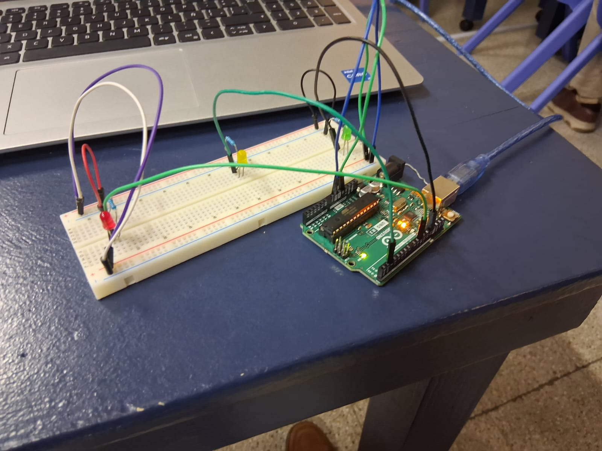
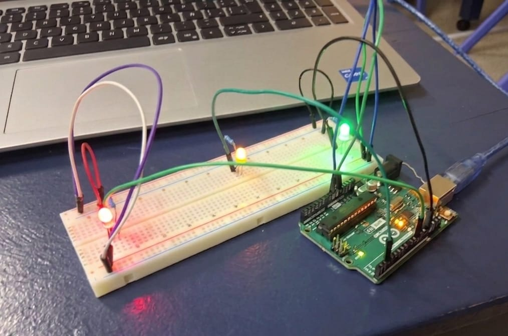

Semana 1: INTRODUCCIÓN A ARDUINO
Respondimos un pdf de los conceptos fundamentales de la platforma arduino y como estos funcionan
SESION 2: INTRODUCCIÓN A LA ROBÓTICA
Creamos un circuito en tinkercad y simulamos su función que este tendria en la vida real.
SESION 3: Semáforos (Antes de vacaciones)
Creamos un circuito y lo intentamos probar pero no dio tiempo por diferentes razones
.jpeg)
Sesión 4: Semaforo antes de vacaciones
Creamos un circuito en el programa de tinkercad, este nos permite a nosotros probar antes el circuito para que no de fallas en el futuro.


SESION 5: CIRCUITO FUNCIONANDO (Unión clases y semáforo)
Creamos un circuito el cual prenda las luces LED en el programa de tinkercad y despues lo recreamos en la vida real.


SESION 6: CIRCUITO ULTRASONICO
Creamos un circuito con un sensor ultrasónico el cual prenda las luces LED de acuerdo a la distancia en cm(0 a 100, 101 a 200, >201), esto podria representar un detector de metales o un sensor lidar.
SESION 7: CIRCUITO ESCALERAS
Creamos un circuito el cual simule las escaleras eléctricas de un centro comercial con un circuito pir y diferentes variables y probabilidades usando if anidado.